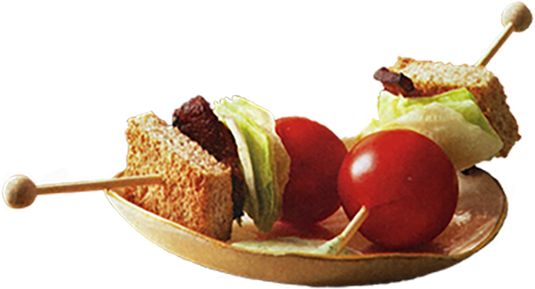

Ingredients
- 4 slices thick-cut Bacon
- 3 slices Whole Wheat Toast, crusts cut off
- 1/2 cup Mayonnaise
- 1/2 cup fresh Basil Leaves
- 1 small head Iceberg Lettuce, cut into 24 chunks (about 1 inch each)
- 24 Cherry Tomatos


Instructions
- Cut each bacon slice into 6 pieces.
- In large skillet, cook over toast into 8 squares.
- Using food processor, puree mayo, basil and 2 tbsp. water; season.
- Thread 1 piece each, bread, bacon, lettuce and tomato on skewer or toothpick.
- Repeat with remaining ingredients.
- Serve with sauce.